文字
背景
行間


部活動報告
 美術部・工芸部活動報告
美術部・工芸部活動報告
今年も千葉県高等学校総合文化祭 美術・工芸作品展に出品をしました。総合文化祭とは、ほぼ全ての千葉県の高校が参加する作品展です。美術部からは絵画を13点、工芸部からは陶芸や藍染など22点を出品しました。更に、今年全国大会にて展示した『ぱんでぃごⅡ世』も全国大会出品ブースにて展示しています。是非ご覧になってください。
千葉県高等学校総合文化祭 美術・工芸作品展
場所:千葉県立美術館
日時:11月12日(火)～11月17日(日)
9:00～16:30
入場無料


 第22回高校生マンガ・イラストグランプリ』で準グランプリを受賞
第22回高校生マンガ・イラストグランプリ』で準グランプリを受賞
日本デザイナー学院が主催するコンテスト『第22回高校生マンガ・イラストグランプリ』で2年石本真理佳さんが準グランプリを受賞しました。
受賞作品の全編は以下に掲載されていますので、ぜひご覧ください
工芸部活動報告
第44回佐倉市民文化祭･美術展に佐倉高校工芸部の作品が展示されます。藍染･陶芸･七宝の個性豊かな作品ばかりです。ぜひご覧になってください。
佐倉市民文化祭･美術展
会期：令和6年10月23日(水)～10月27日(日)
10時～18時(最終日16時まで)
会場：佐倉市美術館 2･3階

工芸部 第４８回全国高等学校総合文化祭美術・工芸部門参加
｢清流の国ぎふ総文2024｣の美術・工芸部門に、3年 小野田杷夏さんの作品｢ぱんでぃごⅡ世｣が展示されました。生徒交流会では、岐阜県の工芸である水うちわをイメージした絹絵うちわの制作体験を行いました。全国から集まった高校生と交流し、とても楽しむことが出来ました。｢ぱんでぃごⅡ世｣は、11月に行われる千葉県高等学校総合文化祭(千葉県立美術館)でも展示されます。ぜひご覧になってください。
 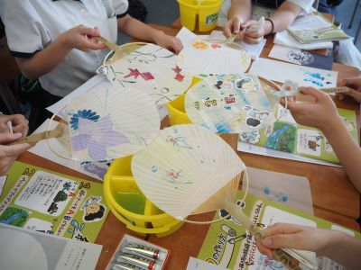
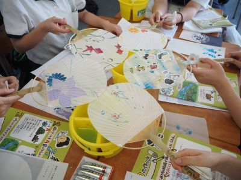


 音楽部 第４８回全国高等学校総合文化祭合唱部門参加
音楽部 第４８回全国高等学校総合文化祭合唱部門参加
「清流の国ぎふ総文２０２４」の合唱部門が行われた可児市文化創造センターには、各県の代表による美しく想いのこもった歌声が響き渡りました。 私たちは、ミスター長嶋？も登場の学校紹介で会場をわかせた後、祭囃子の口唱歌（くちしょうが）を題材とした生命感あふれる「獅子舞」と、歌が生まれるときめきを伝えられるように細部までこだわって練習した「アポロンの竪琴」を披露しました。暖かい聴衆の皆さんの前で楽しく伸びやかに歌うことができとても良い経験になりました。

 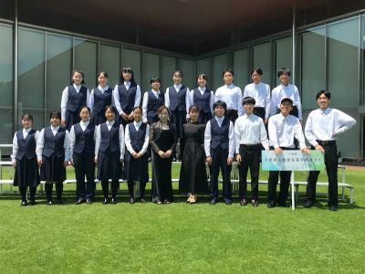
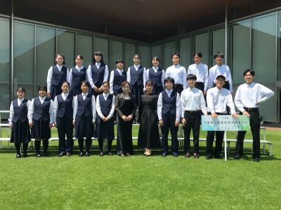
 華道部活動報告（母の日のアレンジメント）
華道部活動報告（母の日のアレンジメント）
５月１０日（金）母の日アレンジメント制作を楽しみました。
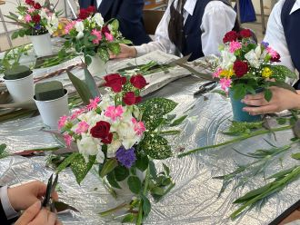

美術部 佐倉市中央公民館でガラス絵展示
佐倉市中央公民館で美術部が描いたガラス絵が公開されております。6月末までの間、外からも中からも無料で見ることができます。ガラス全面に浮遊する様々な生き物たちをご覧下さい。部員7人で５日間で描き上げました。
 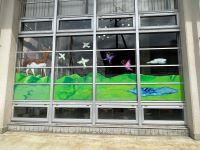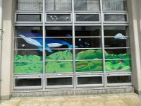
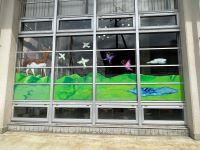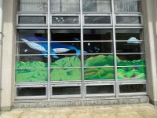

美術部 全日本学生美術展にて受賞
美術部の2年 清原花音さんが、上野の東京都美術館で毎年行われる全日本学生美術展に出品し、佳作を受賞しました。2/12(月)～18(日)に展示されます。昨年に引き続き2年連続の展示です。3/19(火)～22(金)に地域交流棟で行われる、さくらアート(書道部・工芸部・写真部・華道部・美術部合同展示)でも展示します。
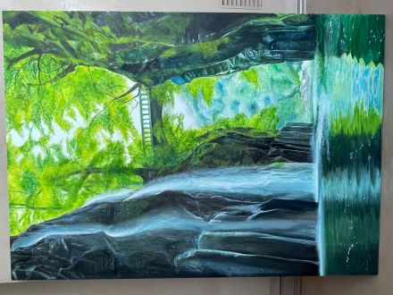
 「大変」な冬に【陸上競技部】
「大変」な冬に【陸上競技部】
第３回考査も終わり、部活動が再開しました。今シーズンは総体県2種目入賞、関東1種目入賞、インターハイ準決勝進出、新人県3種目入賞、関東2種目入賞、等多くの大会で活躍・健闘・成長することができた1年でした。
夏は伸びたけど、冬も同じぐらい伸びる。大きく変われるのが冬、冬季練だよ、とミーティングで顧問の先生から話がありました。初日からグラウンドでみんなで汗を流しています。大変な寒い冬が始まりますが、ここをみんなで楽しく乗り越え、大きく変われるか。充実した冬を過ごしてほしいと思います。
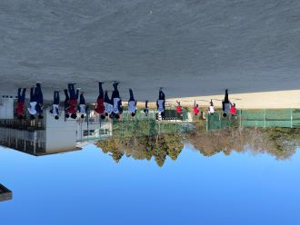
 佐倉の日にしよう【陸上競技部】
佐倉の日にしよう【陸上競技部】
9/21（木）から４日間県大会が行われ、3種目で入賞、2種目で関東大会を決めました。その他、女子3000mでは入賞に僅かに届かなかった種目など、夏の練習の成果が出る形となりました。
http://www5c.biglobe.ne.jp/~iwa-m/results/2023/shinjin/OutputHtml/nans21v/shtml/TimeTable.html
「今日を佐倉の日にしよう」、毎日のミーティングで顧問の先生が言っていたことです。もっとやり切れたと思っている部員もいて、この悔しさを冬の練習、そして春に繋げてほしい。だからこそ、1日の練習、学校生活で成長してほしいと思っています。

北海道インターハイ結果報告！千葉県高校記録更新！！
１週間後の国体最終選考会にて国体種目になる300mHで千葉県高校記録を更新、決勝で出した36秒22は暫定ではありますが、今年度高校1位のタイム、歴代3位の記録となりました。引き続き頑張っていきたいと思います。
1・2年生は桧原湖で3泊4日の合同合宿を行い、心身ともに鍛えました。新人戦シーズンに向けて、日々努力しています。
 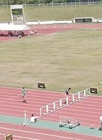
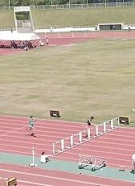 
 速報・インターハイ出場おめでとう！【陸上競技部】
速報・インターハイ出場おめでとう！【陸上競技部】
6/16（金）〜19（月）山梨県にて南関東総体が行われました。
県総体を勝ち抜いた2種目に出場、男子400mHで決勝6位で8月に行われる北海道インターハイの出場を決めました！
佐倉高校陸上競技部のインターハイ出場は39年ぶりだそうです。
インターハイはもちろんですが、来週の県選手権、新チームになり、きつい練習にみんなで取り組んでいます！引き続き応援よろしくお願いします！！


総体結果報告【陸上競技部】
4/21（金）22（土）地区総体・63種目出場、36種目自己新チーム新、36種目県大会出場
http://www5c.biglobe.ne.jp/~iwa-m/results/2023/2/soutai/OutputHtml/nans21v/shtml/TimeTable.html
5/11（木）-14（日）県総体・36種目出場、15種目自己新チーム新
http://www5c.biglobe.ne.jp/~iwa-m/results/2023/soutai/2023-5-11-14-soutai-pro.pdf
7種目予選突破、2種目南関東総体出場権獲得（男子400mH3位・女子400m5位）
大会の日は勿論でしたが、県大会に向けて準備した３週間、１日１日が中身が濃い日々でした、だからこそ成長できたし、嬉しい思いも悔しい思いも沢山できました。自分達のできることは全てやり切れたとも思います、だけどそれでも悔しさが残るところも。それを次のチーム、次のステージで頑張れるか。6月の関東大会、県選手権の上位大会もありますが、１年生のデビュー戦となる高校記録会もあります。定期考査と重なり、練習時間がしっかりと取れないこともありますが、文武両道でできてこそ、佐倉高陸上競技部員です。強く誇り高いチームになるためにもっと頑張っていきたいと思う総体でした。


 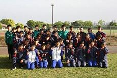
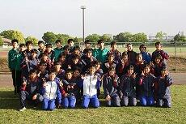
強誇貢献、「しん」チームで挑む春【陸上競技部】
陸上競技部ですが、新しい顧問を招き入れ新体制で令和５年度始まっています。
～強誇貢献、「しん」チームで挑む春～ではじまったスローガン強く、誇り高いチームまではまだまだ届きません、だけど、「貢献」すること、それがチームにも個人にも大切なことを常に大事にして頑張ってきました。
いよいよ明日から総体が始まります、マネージャーから、２・３年生の選手に向けて、各選手のナンバーを手縫いした必勝ダルマの御守りが送られました。部員全員が総体を通して成長する事を顧問は楽しみにしています。（顧問）


美術部より
12日から19日まで東京都美術館で展示されます。

また、17日の授賞式(上野)で賞状授与されます。
 ダンス同好会 バレンタイン公演
ダンス同好会 バレンタイン公演


 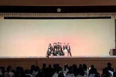
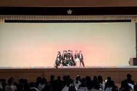 
強誇貢献


 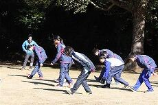
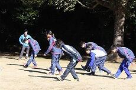 
JRC同好会活動報告
11月９日（水）に開催された千葉県青少年赤十字第２回高校メンバー協議会に参加してきました。
今回は人道支援について学んだ後、他校の生徒と協力して募金箱を作成し、千葉駅周辺で街頭募金活動を行いました。「ウクライナ人道危機救援募金にご協力お願いします！」と、勇気を振り絞って呼びかけたものの、最初は思ったような反応が返ってこなくて辛くなってしまいましたが、それでも諦めずに声を張り上げ、懸命に取り組みました。その甲斐あって徐々に募金に協力してくださる方が増えてきて、人の温かさに感動し、また励まされました。赤十字のベストを着用しての活動に、人の命と尊厳を守るという使命感をより一層高められた一日となりました。
末筆ながら、募金にご協力くださった皆様に心より御礼申し上げます。


これが実力 【陸上競技部】
 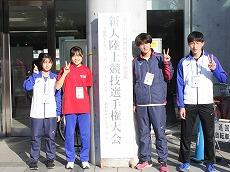
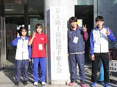

弓道部 照碩旗･杯弓道大会報告
10月23日(土)に開催された令和4年度 第33回 照碩旗･杯弓道大会に出場しました。
本校からは選手12名が参加し，1年生は初の大会出場の場となりました。団体戦では入賞をする事ができませんでしたが、個人戦では2年の髙野選手が一立目3中，二立目３中，合計６中で女子個人優勝しました。また、男子個人優勝者との射詰競射で見事的中を決め、個人総合優勝を果たしました。これは過去33回行われている照碩旗･杯弓道大会において、佐倉高校の優勝は初めてのことでした。
2年生にとっても1年生にとっても課題や目標が見つかる良い機会になった大会でした。今回の経験を今後の練習に活かし、さらなる活躍を目指します。